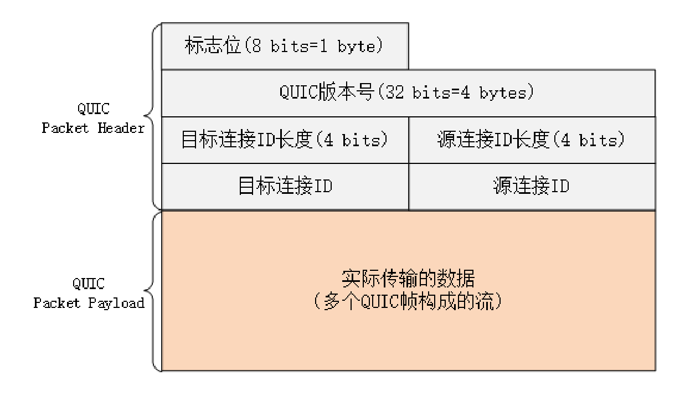

- 00 开篇词｜To Be a HTTP Hero.md
- 01 时势与英雄：HTTP的前世今生.md
- 02 HTTP是什么？HTTP又不是什么？.md
- 03 HTTP世界全览（上）：与HTTP相关的各种概念.md
- 04 HTTP世界全览（下）：与HTTP相关的各种协议.md
- 05 常说的“四层”和“七层”到底是什么？“五层”“六层”哪去了？.md
- 06 域名里有哪些门道？.md
- 07 自己动手，搭建HTTP实验环境.md
- 08 键入网址再按下回车，后面究竟发生了什么？.md
- 09 HTTP报文是什么样子的？.md
- 10 应该如何理解请求方法？.md
- 11 你能写出正确的网址吗？.md
- 12 响应状态码该怎么用？.md
- 13 HTTP有哪些特点？.md
- 14 HTTP有哪些优点？又有哪些缺点？.md
- 15 海纳百川：HTTP的实体数据.md
- 16 把大象装进冰箱：HTTP传输大文件的方法.md
- 17 排队也要讲效率：HTTP的连接管理.md
- 18 四通八达：HTTP的重定向和跳转.md
- 19 让我知道你是谁：HTTP的Cookie机制.md
- 20 生鲜速递：HTTP的缓存控制.md
- 21 良心中间商：HTTP的代理服务.md
- 22 冷链周转：HTTP的缓存代理.md
- 23 HTTPS是什么？SSLTLS又是什么？.md
- 24 固若金汤的根本（上）：对称加密与非对称加密.md
- 25 固若金汤的根本（下）：数字签名与证书.md
- 26 信任始于握手：TLS1.2连接过程解析.md
- 27 更好更快的握手：TLS1.3特性解析.md
- 28 连接太慢该怎么办：HTTPS的优化.md
- 29 我应该迁移到HTTPS吗？.md
- 30 时代之风（上）：HTTP2特性概览.md
- 31 时代之风（下）：HTTP2内核剖析.md
- 32 未来之路：HTTP3展望.md
- 33 我应该迁移到HTTP2吗？.md
- 34 Nginx：高性能的Web服务器.md
- 35 OpenResty：更灵活的Web服务器.md
- 36 WAF：保护我们的网络服务.md
- 37 CDN：加速我们的网络服务.md
- 38 WebSocket：沙盒里的TCP.md
- 39 HTTP性能优化面面观（上）.md
- 40 HTTP性能优化面面观（下）.md
- 结束语 做兴趣使然的Hero.md
32 未来之路：HTTP3展望
在前面的两讲里，我们一起学习了 HTTP/2，你也应该看到了 HTTP/2 做出的许多努力，比如头部压缩、二进制分帧、虚拟的“流”与多路复用，性能方面比 HTTP/1 有了很大的提升，“基本上”解决了“队头阻塞”这个“老大难”问题。
HTTP/2 的“队头阻塞”
等等，你可能要发出疑问了：为什么说是“基本上”，而不是“完全”解决了呢？
这是因为 HTTP/2 虽然使用“帧”“流”“多路复用”，没有了“队头阻塞”，但这些手段都是在应用层里，而在下层，也就是 TCP 协议里，还是会发生“队头阻塞”。
这是怎么回事呢？
让我们从协议栈的角度来仔细看一下。在 HTTP/2 把多个“请求 - 响应”分解成流，交给 TCP 后，TCP 会再拆成更小的包依次发送（其实在 TCP 里应该叫 segment，也就是“段”）。
在网络良好的情况下，包可以很快送达目的地。但如果网络质量比较差，像手机上网的时候，就有可能会丢包。而 TCP 为了保证可靠传输，有个特别的“丢包重传”机制，丢失的包必须要等待重新传输确认，其他的包即使已经收到了，也只能放在缓冲区里，上层的应用拿不出来，只能“干着急”。
我举个简单的例子：
客户端用 TCP 发送了三个包，但服务器所在的操作系统只收到了后两个包，第一个包丢了。那么内核里的 TCP 协议栈就只能把已经收到的包暂存起来，“停下”等着客户端重传那个丢失的包，这样就又出现了“队头阻塞”。
由于这种“队头阻塞”是 TCP 协议固有的，所以 HTTP/2 即使设计出再多的“花样”也无法解决。
Google 在推 SPDY 的时候就已经意识到了这个问题，于是就又发明了一个新的“QUIC”协议，让 HTTP 跑在 QUIC 上而不是 TCP 上。
而这个“HTTP over QUIC”就是 HTTP 协议的下一个大版本，HTTP/3。它在 HTTP/2 的基础上又实现了质的飞跃，真正“完美”地解决了“队头阻塞”问题。
不过 HTTP/3 目前还处于草案阶段，正式发布前可能会有变动，所以今天我尽量不谈那些不稳定的细节。
这里先贴一下 HTTP/3 的协议栈图，让你对它有个大概的了解。

QUIC 协议
从这张图里，你可以看到 HTTP/3 有一个关键的改变，那就是它把下层的 TCP“抽掉”了，换成了 UDP。因为 UDP 是无序的，包之间没有依赖关系，所以就从根本上解决了“队头阻塞”。
你一定知道，UDP 是一个简单、不可靠的传输协议，只是对 IP 协议的一层很薄的包装，和 TCP 相比，它实际应用的较少。
不过正是因为它简单，不需要建连和断连，通信成本低，也就非常灵活、高效，“可塑性”很强。
所以，QUIC 就选定了 UDP，在它之上把 TCP 的那一套连接管理、拥塞窗口、流量控制等“搬”了过来，“去其糟粕，取其精华”，打造出了一个全新的可靠传输协议，可以认为是“新时代的 TCP”。

QUIC 最早是由 Google 发明的，被称为 gQUIC。而当前正在由 IETF 标准化的 QUIC 被称为 iQUIC。两者的差异非常大，甚至比当年的 SPDY 与 HTTP/2 的差异还要大。
gQUIC 混合了 UDP、TLS、HTTP，是一个应用层的协议。而 IETF 则对 gQUIC 做了“清理”，把应用部分分离出来，形成了 HTTP/3，原来的 UDP 部分“下放”到了传输层，所以 iQUIC 有时候也叫“QUIC-transport”。
接下来要说的 QUIC 都是指 iQUIC，要记住，它与早期的 gQUIC 不同，是一个传输层的协议，和 TCP 是平级的。
QUIC 的特点
QUIC 基于 UDP，而 UDP 是“无连接”的，根本就不需要“握手”和“挥手”，所以天生就要比 TCP 快。
就像 TCP 在 IP 的基础上实现了可靠传输一样，QUIC 也基于 UDP 实现了可靠传输，保证数据一定能够抵达目的地。它还引入了类似 HTTP/2 的“流”和“多路复用”，单个“流”是有序的，可能会因为丢包而阻塞，但其他“流”不会受到影响。
为了防止网络上的中间设备（Middle Box）识别协议的细节，QUIC 全面采用加密通信，可以很好地抵御窜改和“协议僵化”（ossification）。
而且，因为 TLS1.3 已经在去年（2018）正式发布，所以 QUIC 就直接应用了 TLS1.3，顺便也就获得了 0-RTT、1-RTT 连接的好处。
但 QUIC 并不是建立在 TLS 之上，而是内部“包含”了 TLS。它使用自己的帧“接管”了 TLS 里的“记录”，握手消息、警报消息都不使用 TLS 记录，直接封装成 QUIC 的帧发送，省掉了一次开销。
QUIC 内部细节
由于 QUIC 在协议栈里比较偏底层，所以我只简略介绍两个内部的关键知识点。
QUIC 的基本数据传输单位是包（packet）和帧（frame），一个包由多个帧组成，包面向的是“连接”，帧面向的是“流”。
QUIC 使用不透明的“连接 ID”来标记通信的两个端点，客户端和服务器可以自行选择一组 ID 来标记自己，这样就解除了 TCP 里连接对“IP 地址 + 端口”（即常说的四元组）的强绑定，支持“连接迁移”（Connection Migration）。

比如你下班回家，手机会自动由 4G 切换到 WiFi。这时 IP 地址会发生变化，TCP 就必须重新建立连接。而 QUIC 连接里的两端连接 ID 不会变，所以连接在“逻辑上”没有中断，它就可以在新的 IP 地址上继续使用之前的连接，消除重连的成本，实现连接的无缝迁移。
QUIC 的帧里有多种类型，PING、ACK 等帧用于管理连接，而 STREAM 帧专门用来实现流。
QUIC 里的流与 HTTP/2 的流非常相似，也是帧的序列，你可以对比着来理解。但 HTTP/2 里的流都是双向的，而 QUIC 则分为双向流和单向流。
QUIC 帧普遍采用变长编码，最少只要 1 个字节，最多有 8 个字节。流 ID 的最大可用位数是 62，数量上比 HTTP/2 的 2^31 大大增加。
流 ID 还保留了最低两位用作标志，第 1 位标记流的发起者，0 表示客户端，1 表示服务器；第 2 位标记流的方向，0 表示双向流，1 表示单向流。
所以 QUIC 流 ID 的奇偶性质和 HTTP/2 刚好相反，客户端的 ID 是偶数，从 0 开始计数。
HTTP/3 协议
了解了 QUIC 之后，再来看 HTTP/3 就容易多了。
因为 QUIC 本身就已经支持了加密、流和多路复用，所以 HTTP/3 的工作减轻了很多，把流控制都交给 QUIC 去做。调用的不再是 TLS 的安全接口，也不是 Socket API，而是专门的 QUIC 函数。不过这个“QUIC 函数”还没有形成标准，必须要绑定到某一个具体的实现库。
HTTP/3 里仍然使用流来发送“请求 - 响应”，但它自身不需要像 HTTP/2 那样再去定义流，而是直接使用 QUIC 的流，相当于做了一个“概念映射”。
HTTP/3 里的“双向流”可以完全对应到 HTTP/2 的流，而“单向流”在 HTTP/3 里用来实现控制和推送，近似地对应 HTTP/2 的 0 号流。
由于流管理被“下放”到了 QUIC，所以 HTTP/3 里帧的结构也变简单了。
帧头只有两个字段：类型和长度，而且同样都采用变长编码，最小只需要两个字节。

HTTP/3 里的帧仍然分成数据帧和控制帧两类，HEADERS 帧和 DATA 帧传输数据，但其他一些帧因为在下层的 QUIC 里有了替代，所以在 HTTP/3 里就都消失了，比如 RST_STREAM、WINDOW_UPDATE、PING 等。
头部压缩算法在 HTTP/3 里升级成了“QPACK”，使用方式上也做了改变。虽然也分成静态表和动态表，但在流上发送 HEADERS 帧时不能更新字段，只能引用，索引表的更新需要在专门的单向流上发送指令来管理，解决了 HPACK 的“队头阻塞”问题。
另外，QPACK 的字典也做了优化，静态表由之前的 61 个增加到了 98 个，而且序号从 0 开始，也就是说“:authority”的编号是 0。
HTTP/3 服务发现
讲了这么多，不知道你注意到了没有：HTTP/3 没有指定默认的端口号，也就是说不一定非要在 UDP 的 80 或者 443 上提供 HTTP/3 服务。
那么，该怎么“发现”HTTP/3 呢？
这就要用到 HTTP/2 里的“扩展帧”了。浏览器需要先用 HTTP/2 协议连接服务器，然后服务器可以在启动 HTTP/2 连接后发送一个“Alt-Svc”帧，包含一个“h3=host:port”的字符串，告诉浏览器在另一个端点上提供等价的 HTTP/3 服务。
浏览器收到“Alt-Svc”帧，会使用 QUIC 异步连接指定的端口，如果连接成功，就会断开 HTTP/2 连接，改用新的 HTTP/3 收发数据。
小结
HTTP/3 综合了我们之前讲的所有技术（HTTP/1、SSL/TLS、HTTP/2），包含知识点很多，比如队头阻塞、0-RTT 握手、虚拟的“流”、多路复用，算得上是“集大成之作”，需要多下些功夫好好体会。
- HTTP/3 基于 QUIC 协议，完全解决了“队头阻塞”问题，弱网环境下的表现会优于 HTTP/2；
- QUIC 是一个新的传输层协议，建立在 UDP 之上，实现了可靠传输；
- QUIC 内含了 TLS1.3，只能加密通信，支持 0-RTT 快速建连；
- QUIC 的连接使用“不透明”的连接 ID，不绑定在“IP 地址 + 端口”上，支持“连接迁移”；
- QUIC 的流与 HTTP/2 的流很相似，但分为双向流和单向流；
- HTTP/3 没有指定默认端口号，需要用 HTTP/2 的扩展帧“Alt-Svc”来发现。
课下作业
- IP 协议要比 UDP 协议省去 8 个字节的成本，也更通用，QUIC 为什么不构建在 IP 协议之上呢？
- 说一说你理解的 QUIC、HTTP/3 的好处。
- 对比一下 HTTP/3 和 HTTP/2 各自的流、帧，有什么相同点和不同点。
欢迎你把自己的学习体会写在留言区，与我和其他同学一起讨论。如果你觉得有所收获，也欢迎把文章分享给你的朋友。